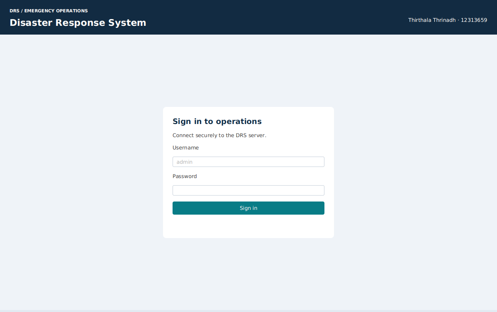
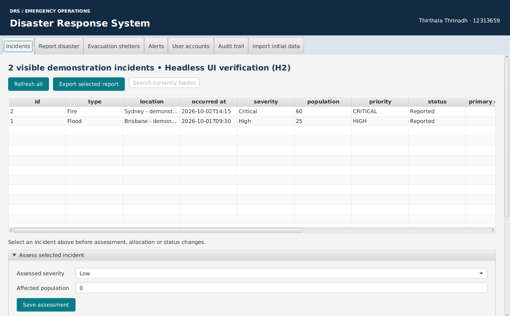
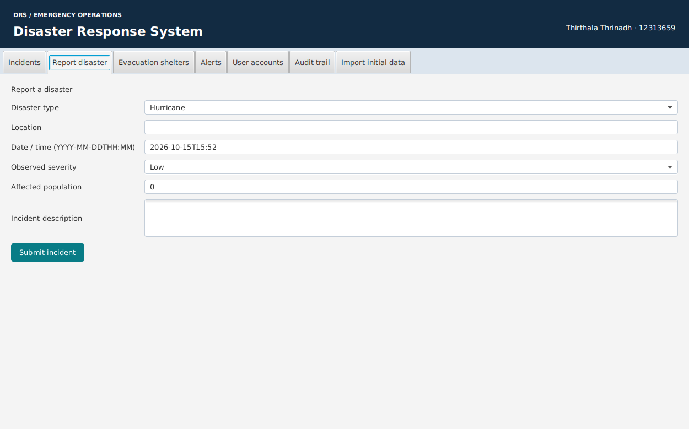
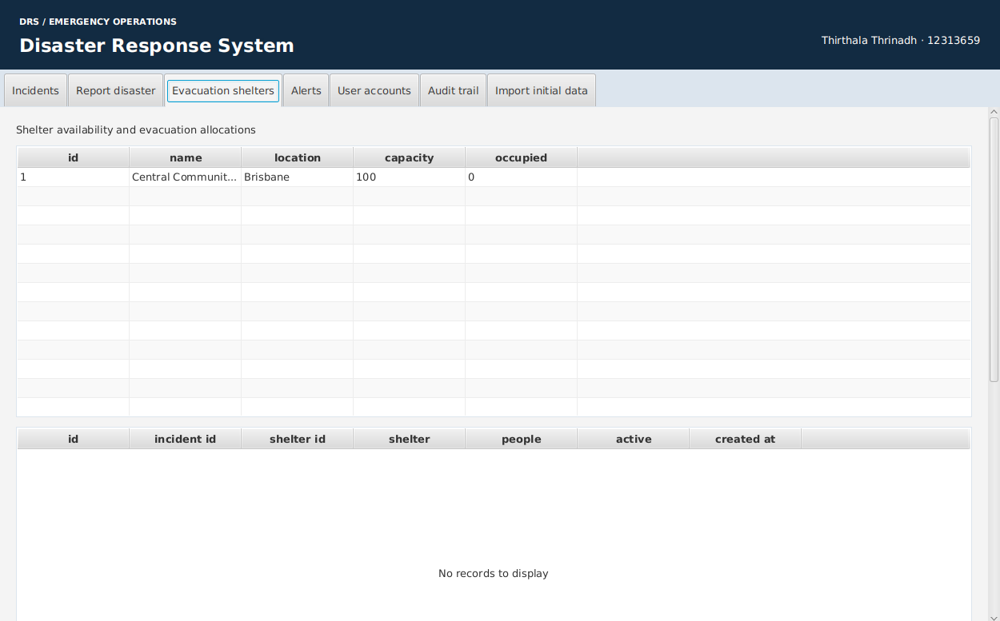
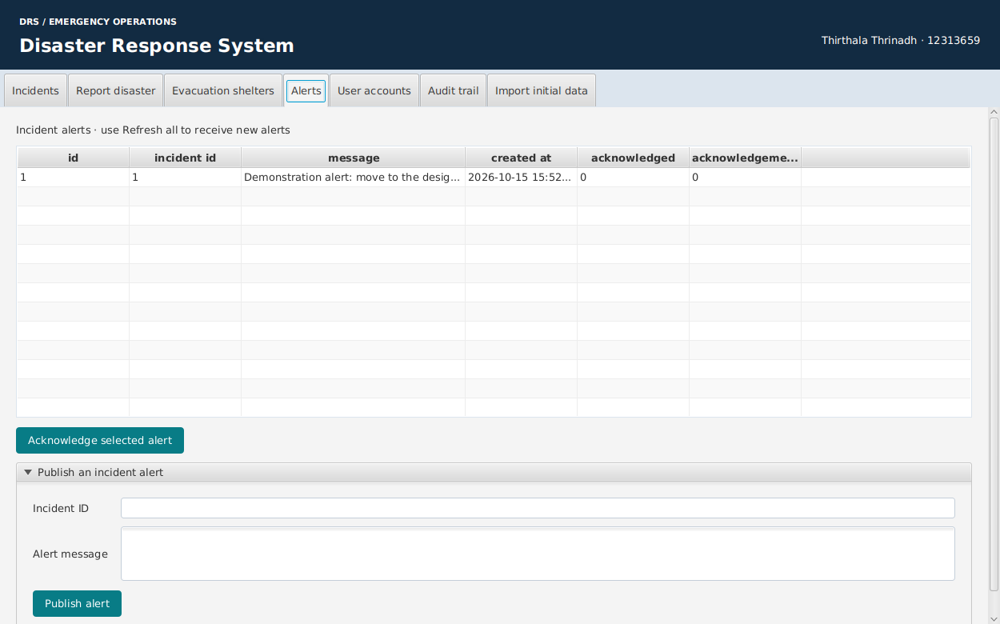
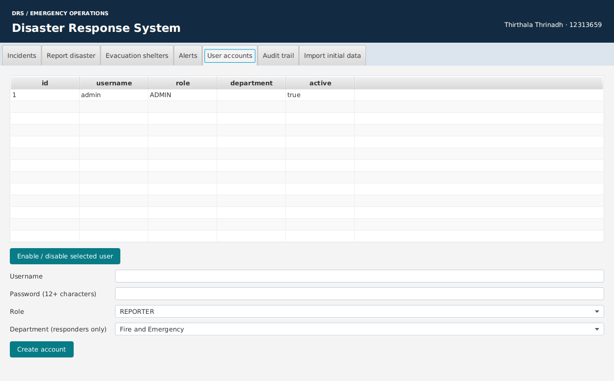
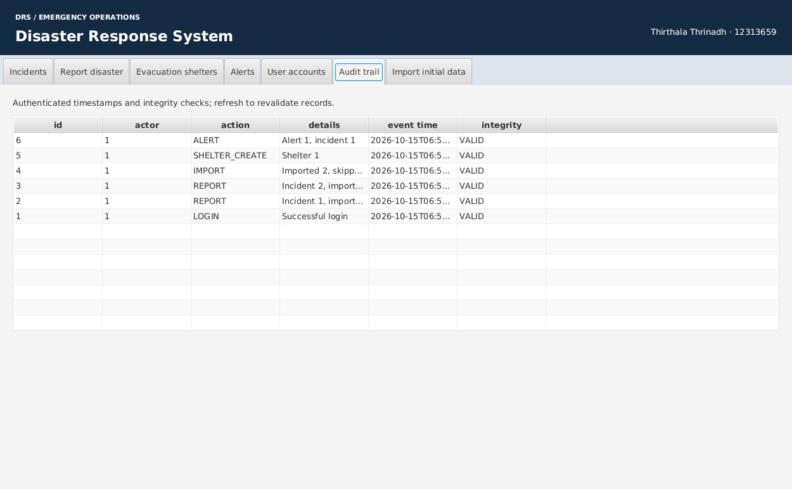
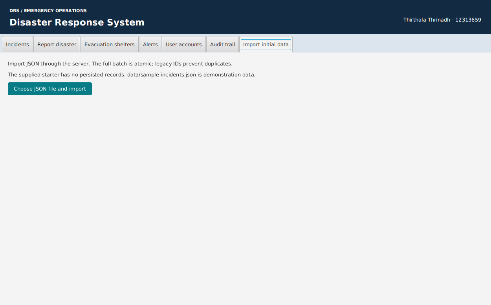

Thirthala Thrinadh · 12313659
run.bat setup.config/server.properties with your local MySQL credentials.run.bat server, then run.bat client in a second terminal.test.bat for the bundled automated tests.Run setup, enter your MySQL credentials, start the server, then start the client. Use admin and the generated password. These steps are detailed in README.md.

Select a row before assessing, assigning departments or changing status. Scroll vertically for the response controls and horizontally for all columns. Search filters the loaded incidents.

Enter type, location, ISO date/time, severity, affected population and a description. Submit to receive a generated ID.

Create a shelter using the form below the tables. Select a shelter, enter an incident ID and people count, then allocate. Select an evacuation and release it to restore capacity.

Coordinators publish incident messages. Reporters and assigned responders can refresh and acknowledge visible alerts.

Administrators create accounts, assign responder departments, and enable or disable users.

The server records actor, action and time with an integrity tag. VALID means the stored row matches its tag; this is not proof against deleted records or the server key holder.

Choose sample-incidents.json for demonstration, or convert actual initial text exports and choose the resulting JSON. Invalid batches roll back.
